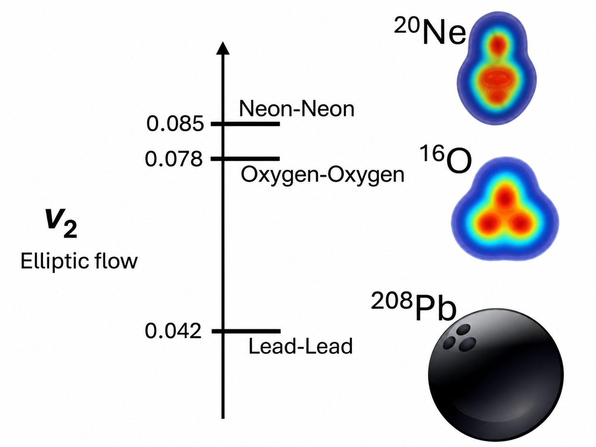

Revealing Nuclear Geometry with O+O and Ne+Ne Collisions
Using anisotropic flow to probe the shape of light nuclei
Plenary Talk — Initial Stages 2025
Presented the first ATLAS results from the O+O and Ne+Ne collision program at Initial Stages 2025 in Taipei, Taiwan, on September 11, 2025.
Overview
The shape of a colliding nucleus influences the geometry of the matter created in a high-energy nuclear collision. As this matter expands, its initial spatial anisotropy is converted into an anisotropy in the directions of the produced particles. Collective flow can therefore reveal properties of the incoming nuclei, connecting measurements of the quark–gluon plasma (QGP) with questions traditionally addressed by nuclear-structure physics.
This project studies that connection using the first ATLAS measurements of azimuthal flow in \(^{16}\)O+\(^{16}\)O and \(^{20}\)Ne+\(^{20}\)Ne collisions at \(\sqrt{s_{\mathrm{NN}}}=5.36\) TeV, recorded at the LHC in 2025. Oxygen and neon are similar in size but have different predicted intrinsic shapes, making their comparison particularly sensitive to nuclear geometry. The central result is an enhancement of elliptic flow, \(v_2\), in Ne+Ne relative to O+O collisions, consistent with the pronounced prolate deformation of the neon nucleus. The four-particle cumulant measurements provide especially strong sensitivity to this difference.
Analysis
Why compare oxygen and neon?
In non-central nuclear collisions, the offset between the two colliding nuclei produces an almond-shaped overlap region. In the most central collisions, this impact-parameter contribution becomes small, and fluctuations and the intrinsic shapes of the nuclei play a larger role. Light-ion collisions are consequently a useful setting in which to study the influence of nuclear structure on collective motion.
Nuclear-structure calculations describe \(^{16}\)O as approximately spherical, with possible tetrahedral \(\alpha\)-cluster correlations, whereas \(^{20}\)Ne is predicted to have a pronounced prolate, or elongated, configuration. The latter is often described as a bowling-pin-like shape. Because the two nuclei have comparable masses, taking ratios of their flow measurements reduces several shared size-dependent and experimental effects, making the differences more sensitive to the initial nuclear geometry.

From initial geometry to anisotropic flow
The final-state azimuthal distribution is characterized by the flow coefficients \(v_n\), which quantify the Fourier harmonics of particle emission. In a simple hydrodynamic response picture, the elliptic and triangular harmonics are related to the corresponding initial-state eccentricities through
\[ v_n \simeq \kappa_n\varepsilon_n, \qquad n=2,3, \]
where \(\varepsilon_n\) describes the initial spatial anisotropy and \(\kappa_n\) encodes the collective response. This relation is approximate, but it illustrates the basic principle: differences in the intrinsic geometry of oxygen and neon can survive the expansion and appear as differences in the measured \(v_n\). Elliptic flow, \(v_2\), is especially sensitive to an elongated initial configuration, while triangular flow, \(v_3\), provides complementary information about event-by-event geometry fluctuations.
Measuring flow and its fluctuations
ATLAS measured the flow harmonics \(v_2\), \(v_3\), and \(v_4\) as functions of transverse momentum, charged-particle multiplicity, and collision centrality. The analysis combines two complementary methods. Two-particle azimuthal correlations, with a template-fit subtraction, measure the flow harmonics while reducing the contributions of jets and other non-flow correlations. Four-particle subevent cumulants use higher-order particle correlations to suppress non-flow and probe different moments of the event-by-event flow distribution.
The four-particle cumulant is defined by
\[ c_n\{4\}=\langle\!\langle\{4\}_n\rangle\!\rangle -2\langle\!\langle\{2\}_n\rangle\!\rangle^2, \qquad v_n\{4\}=\bigl(-c_n\{4\}\bigr)^{1/4}, \]
where \(\{2\}_n\) and \(\{4\}_n\) are the two- and four-particle azimuthal correlations and the double brackets denote ensemble averages; \(v_n\{4\}\) is defined when \(c_n\{4\}<0\). Unlike the two-particle measurement, which is sensitive to the mean squared flow magnitude, the four-particle measurement also constrains the structure of its event-by-event fluctuations. Comparing \(v_n\{2\}\) and \(v_n\{4\}\) thus provides additional information about the initial nuclear geometry.
Experimental signatures of collectivity
Both O+O and Ne+Ne collisions exhibit the hierarchy \(v_2>v_3>v_4\). The measured \(v_2(p_{\mathrm{T}})\) rises at low transverse momentum and decreases after a maximum around \(2\)–\(4\) GeV, following trends familiar from larger heavy-ion systems. These features are consistent with a collective response in the light-ion systems, although their detailed interpretation requires control of non-flow contributions and initial-state fluctuations.
The difference between the two- and four-particle measurements becomes more pronounced toward high multiplicity, revealing the increasing relative role of flow fluctuations in central events. This motivates examining not only the magnitudes of the individual harmonics but also their ratios between the two collision systems.
The nuclear-shape signal in central collisions
The most direct signature comes from the Ne+Ne/O+O ratios of the flow harmonics. For centralities more peripheral than approximately 10%, the \(v_2\) ratios vary relatively little with centrality. Toward the most central collisions, however, both the two- and four-particle elliptic-flow ratios increase. The enhancement is more pronounced for \(v_2\{4\}\), making the four-particle cumulant comparison particularly sensitive to the difference in intrinsic nuclear shape.
The triangular-flow measurements provide a useful contrast. The two-particle \(v_3\) ratio decreases toward the most central collisions, becoming comparable between Ne+Ne and O+O in the 0–1% interval. Together, these observations favor an interpretation in which neon’s elongated geometry contributes to the enhanced elliptic response, rather than a uniform increase of all flow harmonics. The multiplicity-dependent and centrality-dependent comparisons are presented in Fig. 6 and Fig. 7 of the ATLAS paper, respectively.
Comparison with nuclear-structure models
The measurements are also compared with hydrodynamic calculations incorporating microscopic nuclear configurations. Models using nuclear structures from the projected generator coordinate method, together with different descriptions of initial energy deposition, reproduce some aspects of the O+O and Ne+Ne systematics but differ in their ability to describe the centrality dependence. In particular, the observed central enhancement of the \(v_2\) ratio is described more successfully by the calculation combining nuclear-structure inputs with Trento initial conditions than by the calculation using IP-Glasma initial conditions.
This comparison illustrates both the value and the challenge of using flow as a nuclear-structure probe. The data are sensitive to the intrinsic shapes of the nuclei, but extracting quantitative nuclear-structure constraints also requires control of the initial-state model and the subsequent hydrodynamic response.
My Contribution
As a member of the ATLAS primary analysis group, I served as the main analyst for the multi-particle cumulant measurements in O+O and Ne+Ne collisions. This work supplied the four-particle flow observables that probe event-by-event fluctuations and give the strongest sensitivity to the nuclear-shape difference in the elliptic-flow comparison. I also presented the first ATLAS O+O and Ne+Ne flow results in a plenary talk at Initial Stages 2025.
Broader Implications
The O+O and Ne+Ne measurements demonstrate how relativistic collisions of light nuclei can connect two complementary questions: what shapes do nuclei have, and how does the matter they create respond collectively to those shapes? Comparing systems with similar size but different intrinsic geometry provides constraints on nuclear-structure calculations while testing hydrodynamic and initial-state models in small collision systems.
The pronounced sensitivity of \(v_2\{4\}\) also establishes higher-order flow correlations as an important part of this program. More precise measurements, together with improved model calculations, may help distinguish the effects of nuclear deformation, clustering, and event-by-event initial-state fluctuations.